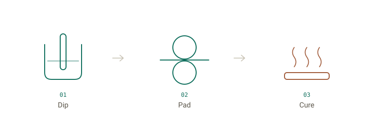
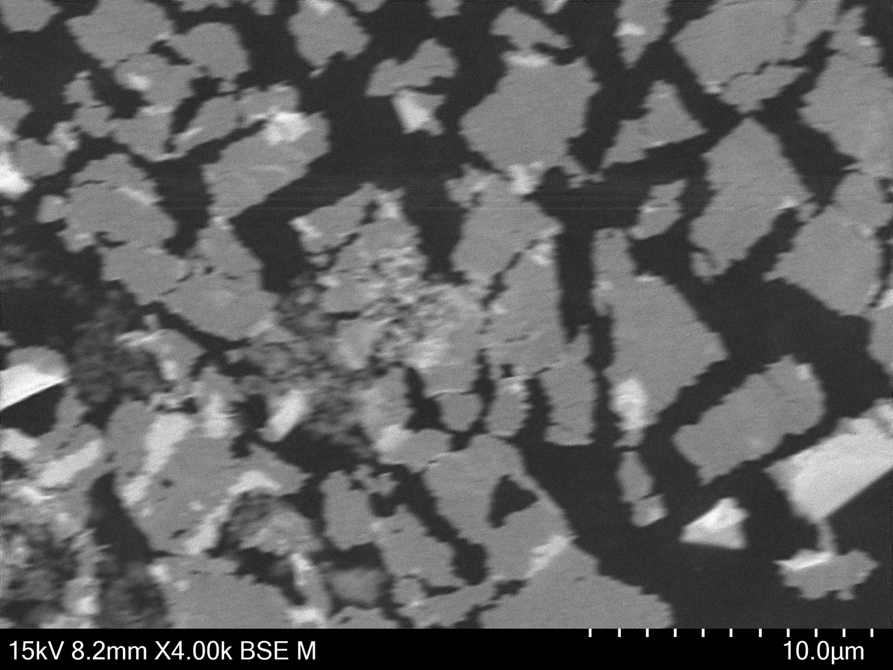
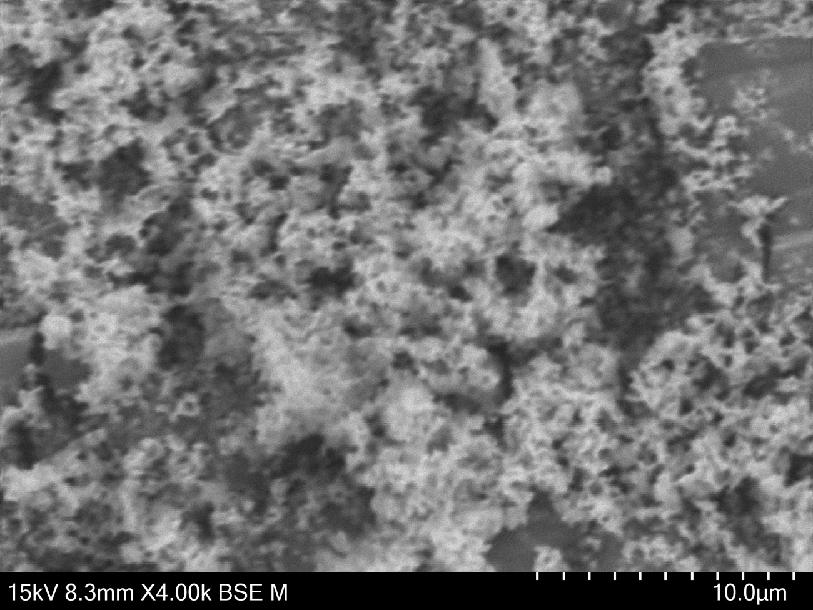
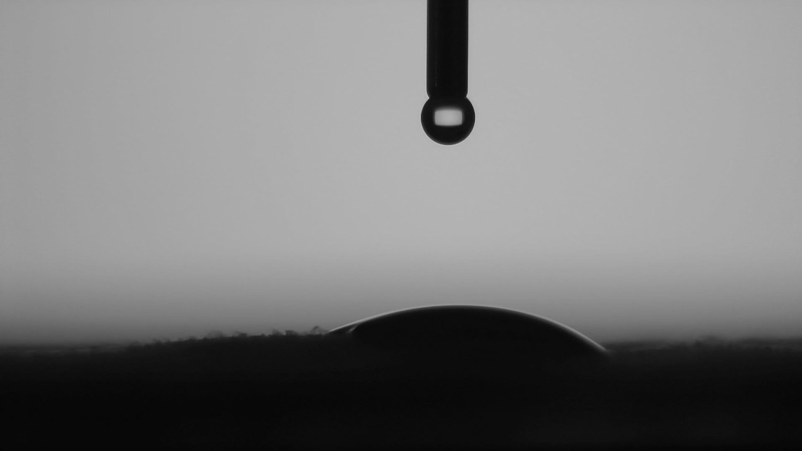
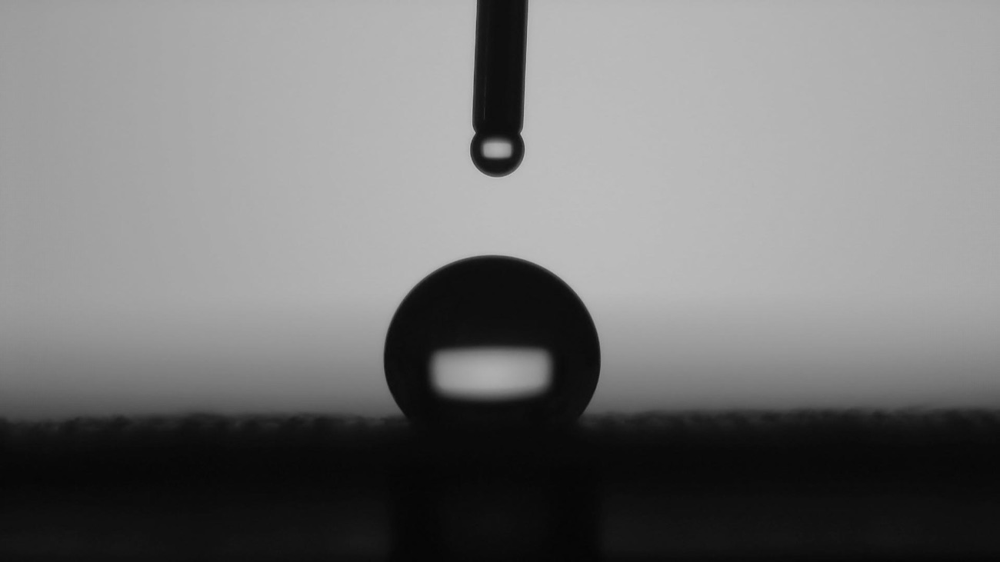

Fluorine-Free Superhydrophobic Coatings for Outdoor Textiles
A UCL masters research project
Getting cotton to shed water like PFAS does, without the fluorine.
The problem
Almost every waterproof relies on PFAS.
The finish that makes rain bead off a jacket is almost always PFAS. Nothing else repels water and oil quite as well, so the outdoor industry has used it for years.
The catch is that they barely break down. They build up in the environment and in us, and they're being phased out of textiles. I'm trying to match how well they work, with no fluorine at all.
The coating
How I make it.
It comes together in three parts, none of them fluorinated.
The polymer. Long carbon chains from stearyl acrylate give a surface water doesn't want to wet. A little PDMS silicone keeps the fabric soft, and an epoxy group with a blocked-isocyanate crosslinker locks it onto the cotton so it survives a wash.
The roughness. Anatase titanium dioxide nanoparticles add the fine texture that lifts a droplet onto a cushion of trapped air. That's what takes it from water-repellent to superhydrophobic.
The particle tweak. Bare anatase clumps together, so I treat it with a silane (VTMS) to help it spread evenly through the polymer and hold up better in sunlight.
I make the polymer as a waterborne emulsion, mix in the particles, and put it on cotton by dip, pad and cure.

- 01
Dip
Cotton is soaked in the dispersion.
- 02
Pad
Rollers squeeze it to an even pickup.
- 03
Cure
Heat sets the coating and bonds it to the fibre.


Why the silane helps. Left to itself, the titanium dioxide coagulates into big shard-like clumps. After the silane treatment the particles are finer and sit more evenly, which is what I want spread through the coating. Both at 4000× on the SEM.
Finisterre
Testing it on real fabric.
Their fabric first, then my coating on it.
I work with Finisterre, the Cornish outdoor brand. I start by characterising their own fabric, including how their current DWR finish behaves, so I have a proper baseline. Then I put my coating on the same fabric and compare against an untreated control, so any change is genuinely down to what I have made.


Finisterre's own fabric, before and after their DWR finish. This is the baseline I measure against before my coating goes on.
Where things stand. The first coated swatches bead water just by looking at them, which is encouraging. The measurements that actually decide it, and the wash tests, are still to come.
In the lab
Lab results to come.
The coating's made and on fabric. Now comes the testing that turns "it beads" into something I can stand behind. Here's what each test is for.
- Wetting
Contact angle
How spherical a droplet sits. I'm aiming above 150°.
- Shedding
Spray and roll-off
Whether water runs straight off a tilted surface.
- Durability
Abrasion and wash
The one that really counts: does it last through rubbing and washing?
- Structure
SEM, FTIR, XRD, TGA
Checking the roughness, the chemistry and crystal form, and that there's no fluorine.
Results will go up here as they come in. Nothing's final, and no numbers go public until my supervisor's signed them off.